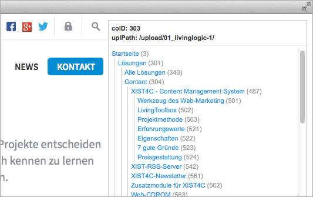

This bookmarklet provides additional infos for websites generated by the LivingLogic AG CMS XIST4C.

The bookmarklet displays the:
- current page's content object ID (coID)
- upload path of the style files (ZIP upload)
- sitemap (all pages!)
Installation
Drag this button to your browser's favorites bar:
or right click on the button and select 'Add to Favorites'
or step-by-step in your browser:
- Create a new bookmark.
- Choose any name for your bookmark.
- Copy the whole text of the
llBookmarklet.txtfile into the bookmark's address field.
Usage
Open your website and click on the created bookmark – Done!
More LivingLogic tools
License
The MIT License (MIT)
Copyright (c) 2014 Stefanie Ambrosch
Permission is hereby granted, free of charge, to any person obtaining a copy of this software and associated documentation files (the "Software"), to deal in the Software without restriction, including without limitation the rights to use, copy, modify, merge, publish, distribute, sublicense, and/or sell copies of the Software, and to permit persons to whom the Software is furnished to do so, subject to the following conditions:
The above copyright notice and this permission notice shall be included in all copies or substantial portions of the Software.
THE SOFTWARE IS PROVIDED "AS IS", WITHOUT WARRANTY OF ANY KIND, EXPRESS OR IMPLIED, INCLUDING BUT NOT LIMITED TO THE WARRANTIES OF MERCHANTABILITY, FITNESS FOR A PARTICULAR PURPOSE AND NONINFRINGEMENT. IN NO EVENT SHALL THE AUTHORS OR COPYRIGHT HOLDERS BE LIABLE FOR ANY CLAIM, DAMAGES OR OTHER LIABILITY, WHETHER IN AN ACTION OF CONTRACT, TORT OR OTHERWISE, ARISING FROM, OUT OF OR IN CONNECTION WITH THE SOFTWARE OR THE USE OR OTHER DEALINGS IN THE SOFTWARE.